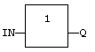
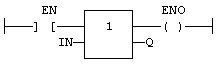

Operator
Variable assignment.
|
Name |
Type |
Description |
|
IN |
ANY |
Any variable or complex expression |
|
Name |
Type |
Description |
|
Q |
ANY |
Forced variable |
The output variable and the input expression must have the same type. The forced variable cannot have the read only attribute. In LD and FBD languages, the 1 block is available to perform a "1 gain" data copy. In LD language, the input rung (EN) enables the assignment, and the output rung keeps the state of the input rung. In IL language, the LD instruction loads the first operand, and the ST instruction stores the current result into a variable. The current result and the operand of ST must have the same type. Both LD and ST instructions can be modified by N in case of a Boolean operand for performing a Boolean negation.
Q := IN;
(*
copy IN into variable Q *)
Q := (IN1 + (IN2 / IN 3)) * IN4;
(* assign the result of a complex expression *)
result := SIN (angle);
(*
assign a variable with the result of a function *)
time := MyTon.ET;
(*
assign a variable with an output parameter of a function block *)

The copy is executed only if EN is TRUE.
ENO has the same value as EN.
